The single reference for every UI element used in SDDBuilder: palette, type, buttons, inputs, rows, cards, frame, canvas, notices, dialogs, lists. Values are copied from the approved screens. Read screens.md for the sources and the differences.
Colours with hex and role, the contrast of the pairs used, and the palette source (credit).
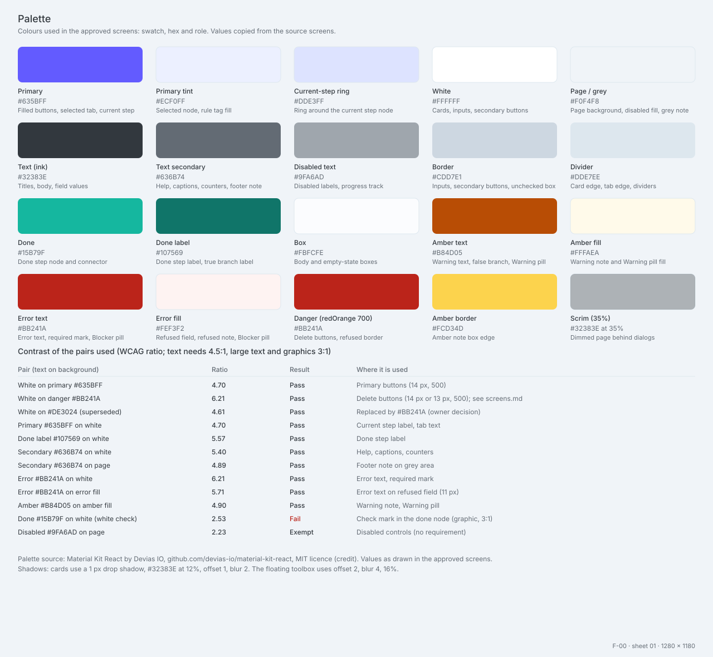
Inter, weights 400 and 500. Each size with its colour and the screen it comes from.
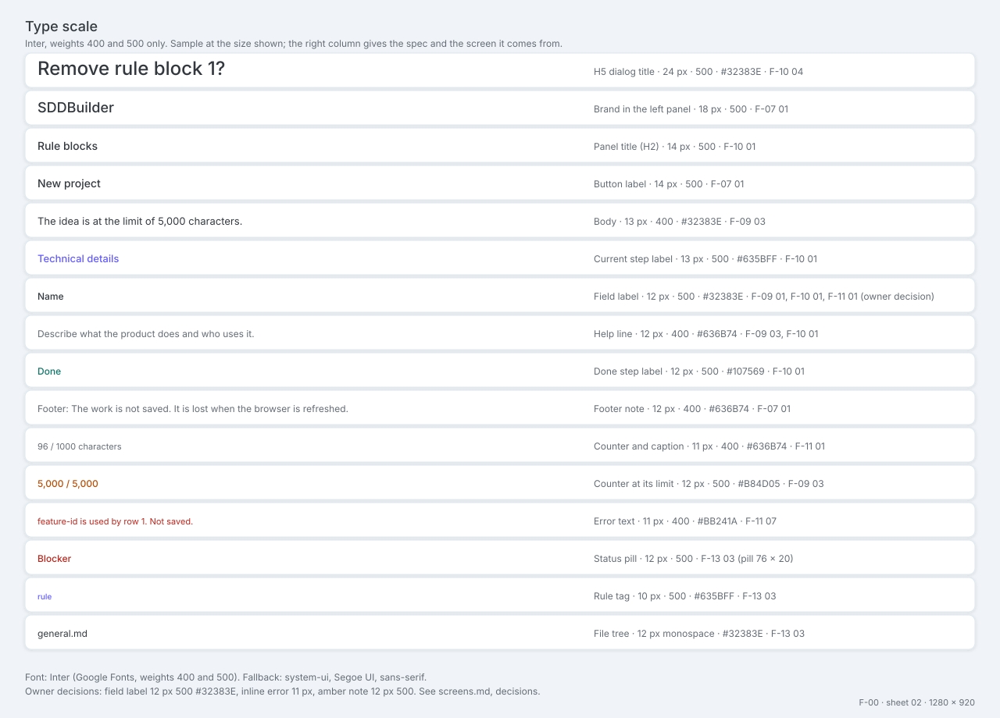
Primary, secondary, danger, disabled, Prev and Next, the dialog pair, icon-only minus and plus, and the Asks first note.
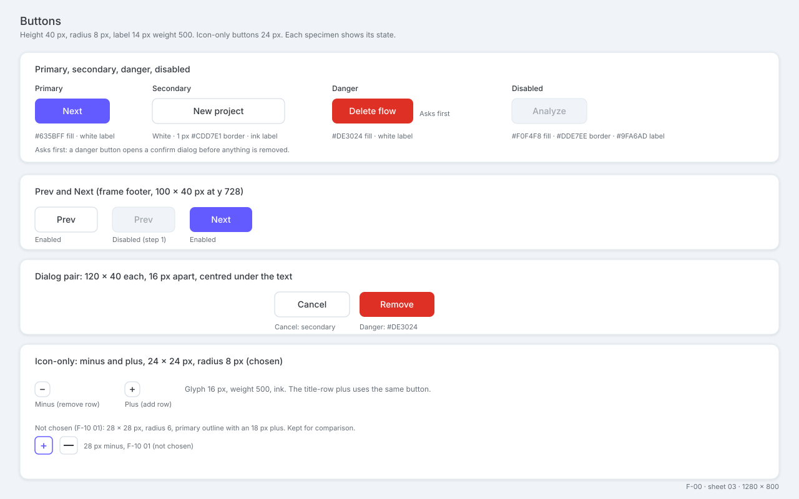
Single-line field, text area with counter, dropdown, checkbox, refused field, read-only field, labels, help line and required mark.
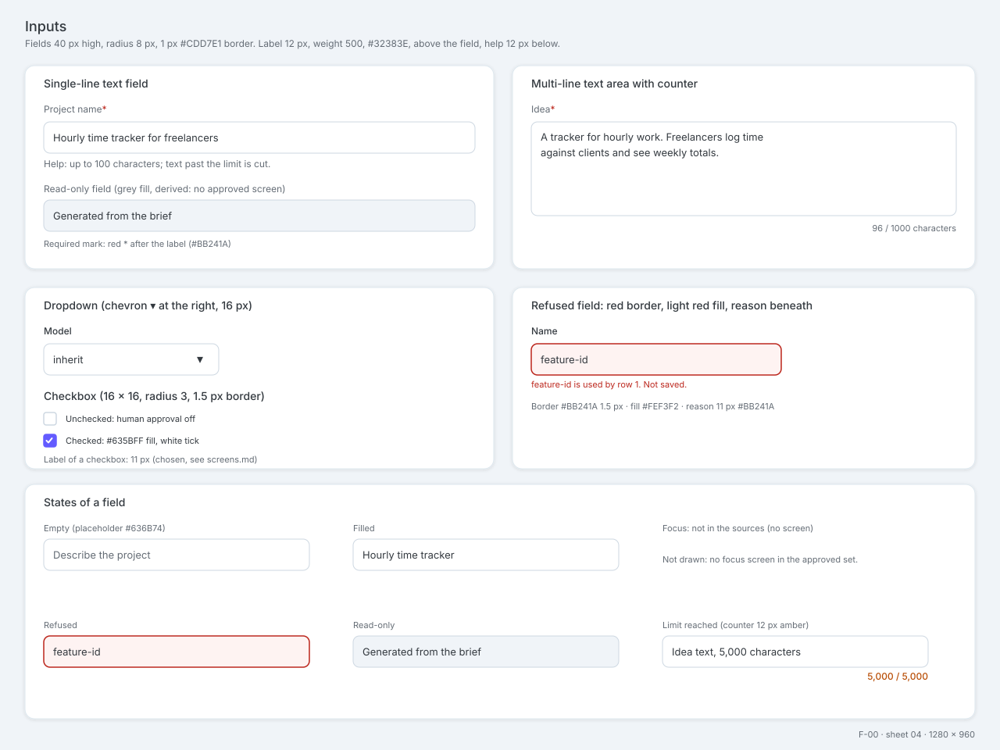
Argument and rule rows, the title row with plus, the block title row with minus, the rule tag, the artifact block and the check row.
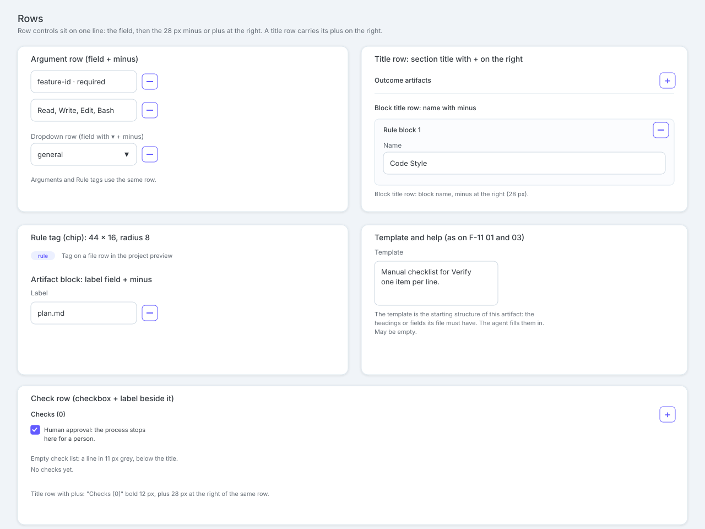
White card with its padding, the tab row, and the grid: labels, field widths and 24 px between sections.
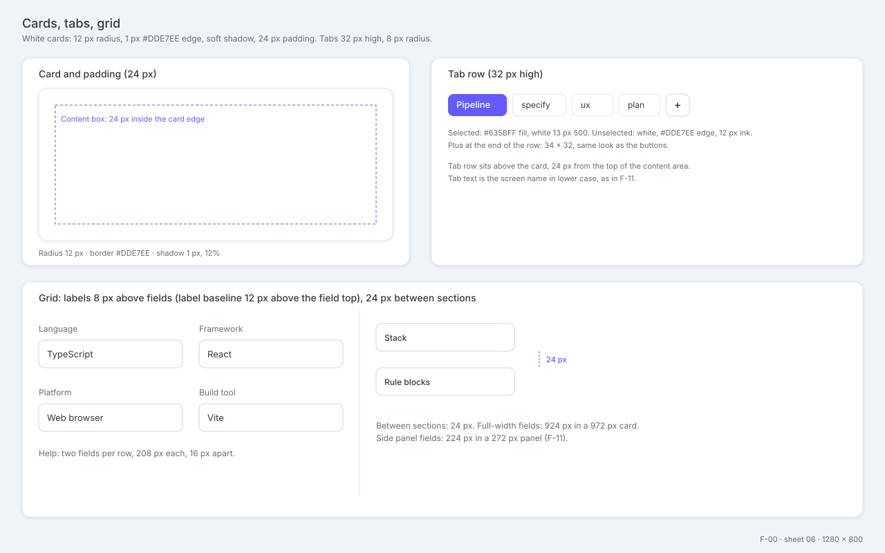
Left panel (260 px) with the stepper states, New project, Prev and Next; the content card and the footer note and caption.
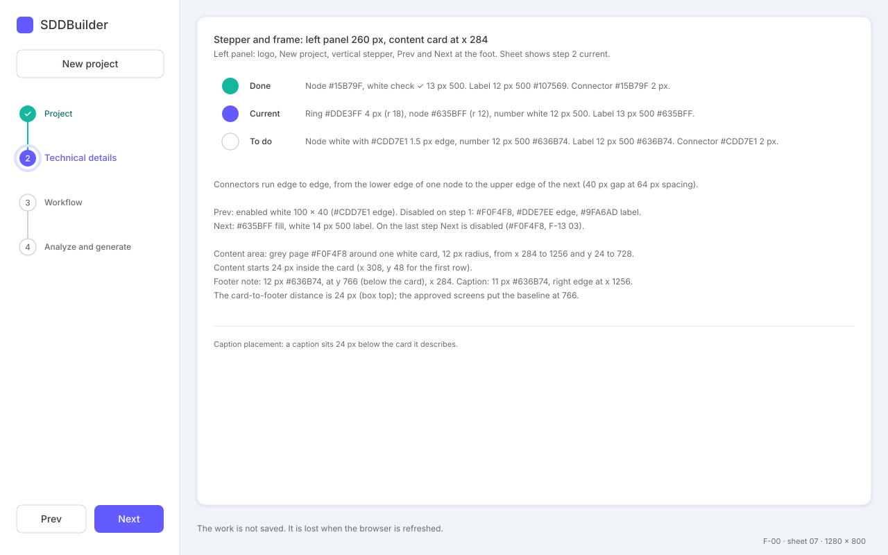
Start and End circles, the Agent box in its states, the Condition diamond with true and false, return and plain arrows, and the floating toolbox.
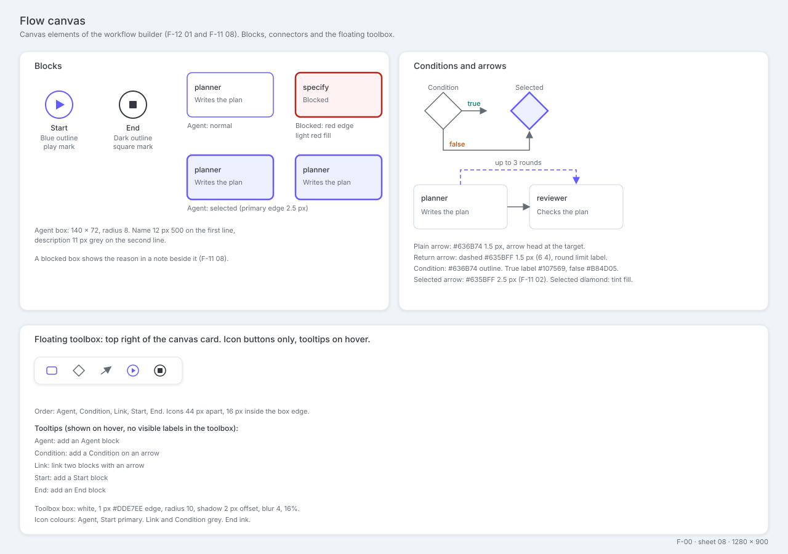
Error notice, amber and grey notes, status pills (Blocker, Warning, Info), empty state and pending state.
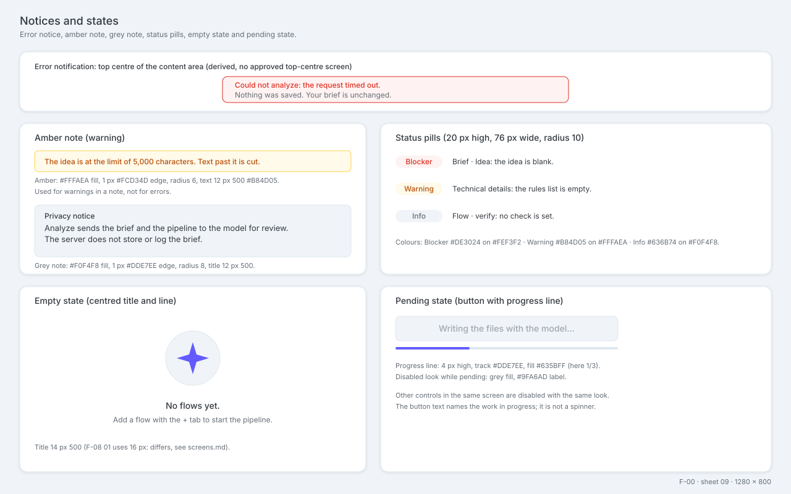
The compact confirmation: 400 px wide, title, one muted line, the Cancel and Danger pair, dimmed screen behind.
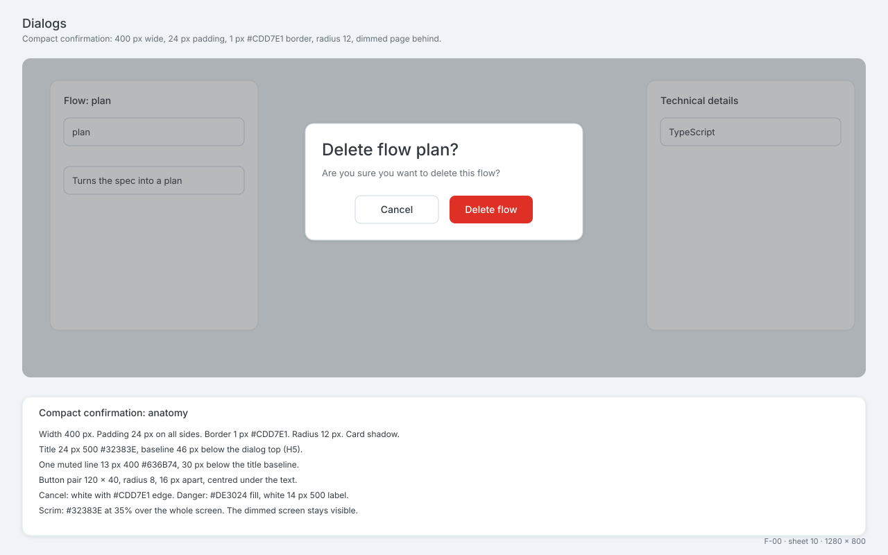
Findings list item (severity pill, subject, message) and the file tree with the rule tag.
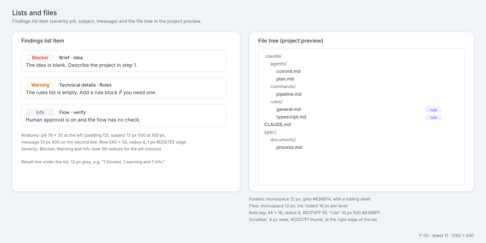